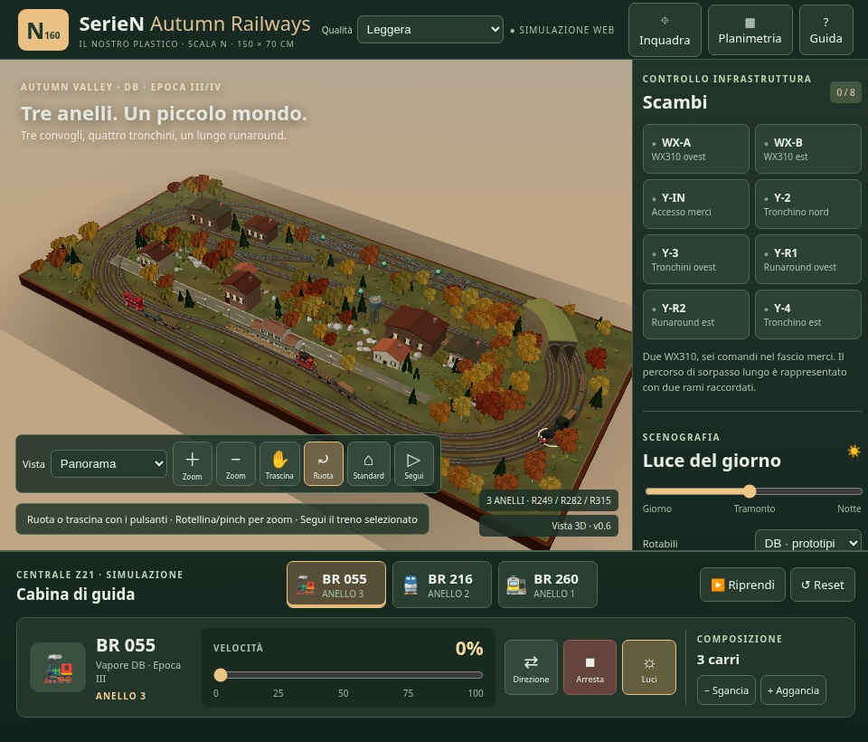
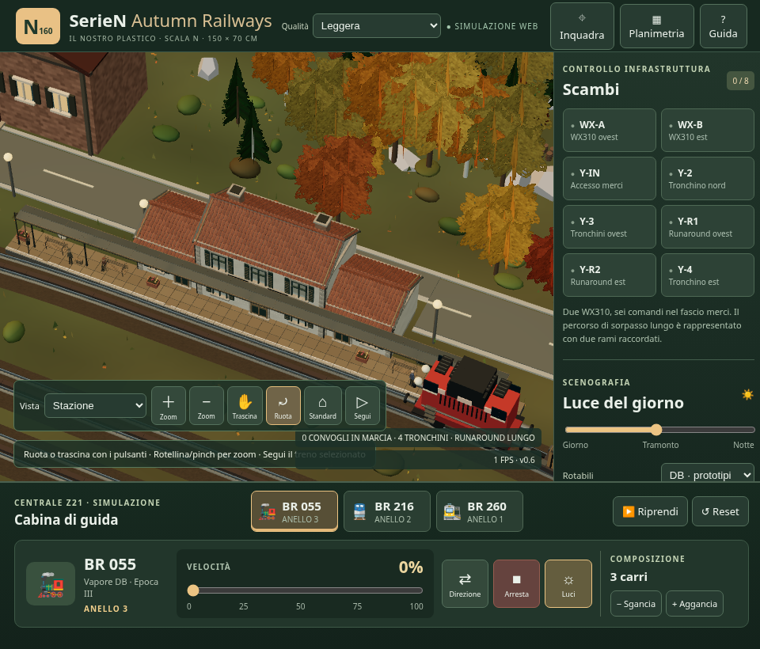
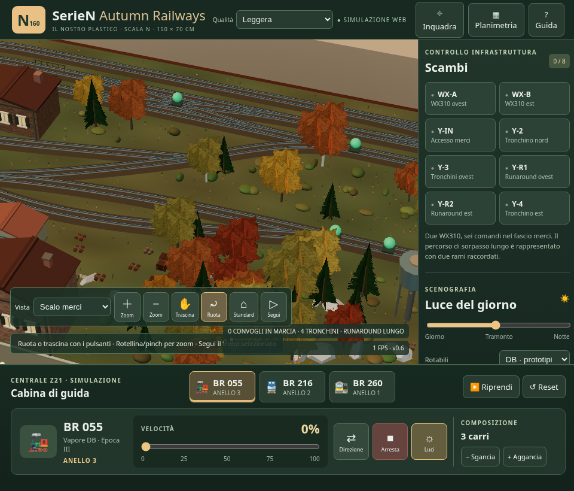
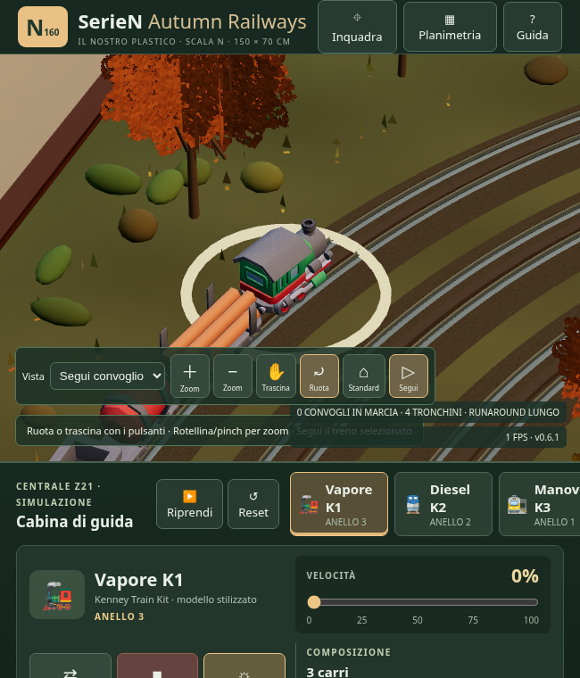

Mappa delle zone · Misure iniziali · Misure finali · Verifica Kenney
Stessa camera, viewport 960×820, DPR1, qualità Leggera, giorno48, treni fermi. Il renderer software del collaudo non misura le prestazioni di una GPU desktop o di un iPad. Campioni brevi: valutare soprattutto geometria e carico della scena.




La locomotiva conserva la posizione al cambio dei modelli. Passo fra veicoli Kenney circa29–31mm negli asset attuali, anziché64mm; sgancio, riaggancio e retromarcia verificati nel browser.